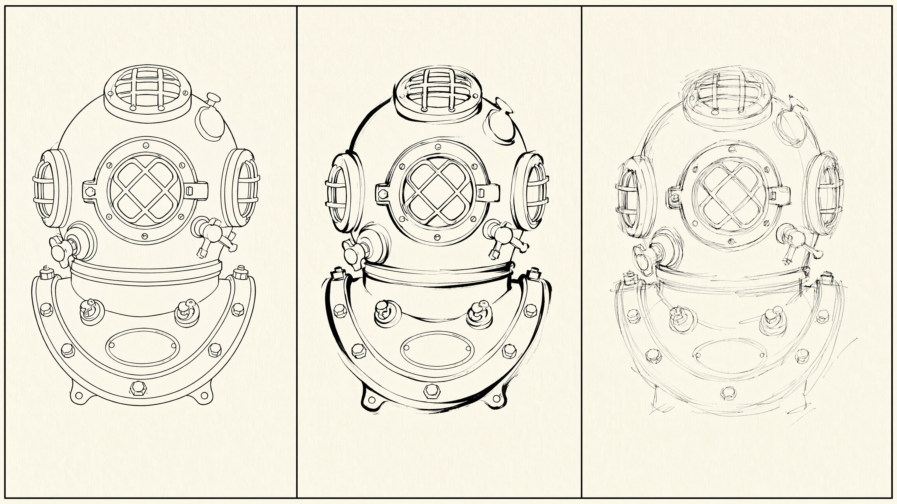
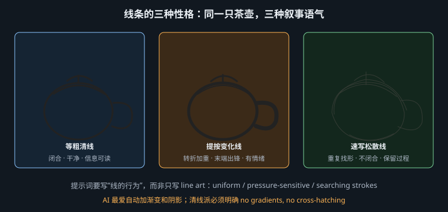
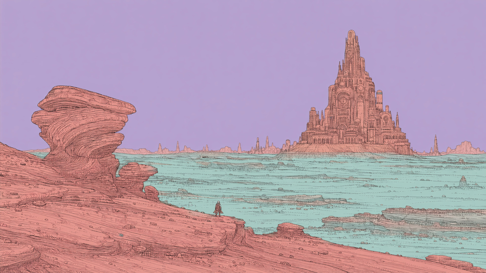

线是插画里唯一没有物理对应物的东西——现实中没有轮廓线，它纯粹是人的发明

先立一个基本认识：自然界不存在轮廓线。你看到的边缘是明度差、色相差或焦点差，是两个面的交界。轮廓线是人类为了在二维平面上快速传达"这是一个物体"而发明的符号。既然它是符号，它的每一个属性——粗细、匀度、连续性——就都是可以被设计的表意手段，而不是对现实的记录。
把线按"粗细变化"和"运笔速度"两个维度切开，得到三种性格，它们传达的东西完全不同：
| 等粗清线 | 提按变化线 | 速写松散线 | |
|---|---|---|---|
| 物理特征 | 粗细恒定，边缘干净，闭合 | 同一根线内部粗细变化 3–5 倍，转折处顿挫，末端出锋 | 短促、重叠、不闭合，有大量"找形"的重复线 |
| 工具来源 | 针管笔（rapidograph）、蘸水笔的固定线宽、数字硬边笔刷 | 毛笔、软头钢笔、G 笔尖——压力可变的工具 | 铅笔、炭笔、圆珠笔——快速、可叠加 |
| 传达什么 | 客观、冷静、可读。线不表态，只描述事实。读者的注意力全部落在内容上 | 力量、体积、情绪。粗线压向暗部和承重处，细线飞向亮部和末梢，线本身在演戏 | 速度、临场、未完成感。观众看到的是"寻找的过程"，不是"结论" |
| 典型媒介 | 欧洲漫画（BD）、技术图解、信息图 | 日式漫画、美式超英、书法性绘画 | 速写本、分镜草图、插画的"手作感"路线 |
| 提示词 | uniform line weight, clean closed contours | tapering brush lines, varying line weight, calligraphic strokes | loose gestural sketch lines, overlapping searching strokes |
这张表的用法：先选性格，再选风格。很多人的提示词失败是因为选了互相冲突的两项——比如同时要 ligne claire（等粗）和 expressive brush strokes（提按），模型只能给你一个不伦不类的中间态。

清线派（法语 ligne claire，这个术语由荷兰漫画家 Joost Swarte 在 1970 年代提出，用以概括埃尔热《丁丁历险记》的画法）有一套非常明确的技术定义：
注意这六条里有五条是"不做什么"。这是理解清线派的钥匙：它的风格特征主要由减法构成。
这一点值得展开，因为它解释了一大类失败。
扩散模型的训练数据里，绝大部分图像是连续调的：照片、3D 渲染、厚涂绘画。这些图像的每个像素都参与了渐变。模型在去噪过程中，"给一个区域加上微妙的明暗变化"是它最熟悉、最低成本的操作——因为在统计意义上，真实图像里几乎不存在完全均匀的大色块。让模型输出一个绝对平的色块，等于要求它对抗自己的先验。
结果就是典型的翻车形态：你写 ligne claire，得到的图有等粗的黑线（这部分模型学会了），但色块里悄悄有柔和的渐变、人脸上有腮红般的软阴影、背景有轻微的虚化、金属物件上有高光——它画的是"清线风格的插画"，不是清线画。远看像，放大就露馅。
清线派是少数必须用负面词的场合。因为你要压制的是模型的默认行为，正向词不够。
正向压制（写清"平"这件事的每一个方面）：
uniform line weight throughout, clean closed black contours, completely flat color fills, no gradients, no shading, no cross-hatching, no cast shadows, no texture, no highlights, everything in sharp focus, no depth of field, no atmospheric perspective
负向压制（MJ 用 --no，FLUX / SD 系写进 negative prompt）：
--no gradient, soft shading, airbrush, glow, bloom, blur, texture, painterly brushwork, 3d render, ambient occlusion
ambient occlusion 这一条很关键——模型经常在物体接缝处加一圈脏兮兮的暗角，那是 3D 渲染的习惯，清线画里绝不该有。
让·吉罗（Jean Giraud，1938–2012），以笔名 Mœbius 创作科幻作品。他做的事是：保留清线的技术纪律，但把它的题材和密度推到极限。拆开看是五个可独立控制的特征：
| 特征 | 具体描述 | 提示词 |
|---|---|---|
| 细而匀的线 | 比《丁丁》更细，但同样恒定。大量用平行细线做等高线式的排布去描述地形起伏——注意这不是排线阴影，它描述的是形，不是明暗 | fine uniform ink line, contour hatching that follows form not shadow |
| 极高细节密度 | 画面里塞满装置、管线、纹样、岩石层理。密度高，但每一处仍然是清晰的线 + 平色，靠不断增加"物"而不是增加"调子"来做丰富 | extremely dense intricate detail, every surface covered with linework |
| 沙漠与巨构 | 标志性场景：无垠的岩漠、风蚀地貌、尺度荒谬的巨型结构，来路不明、功能不明 | vast eroded desert, colossal enigmatic structures of unknown purpose |
| 柔和的异色 | 粉彩系但偏"错误"：淡紫的天、青绿的沙、粉橙的岩。色相被整体挪动，而不是提高饱和度——这是"异星感"的真正来源 | muted pastel palette shifted to alien hues: lilac sky, teal sand, salmon rock |
| 留白与尺度对比 | 天空常常是大面积的空（纯色或极简渐层），人物被画得极小，用以反衬环境的巨大 | vast empty flat sky, tiny lone figure dwarfed by the environment |
沿用第 14 章的双轨做法。轨道 A（点名）：
a lone traveller walking across an eroded desert plateau, a colossal ancient structure on the horizon, even flat light, no cast shadow, in the manner of Mœbius' European science fiction comics, fine uniform ink line with flat color fills, wide establishing shot, figure very small in frame, everything in sharp focus --ar 16:9 --no gradient, soft shading, blur, 3d render
模型：MJ v8.1 · 画幅 16:9 · --stylize 200
轨道 B（不点名）：
a lone traveller walking across an eroded desert plateau, a colossal enigmatic structure of unknown purpose on the horizon, even flat light from no particular direction, no cast shadows, fine uniform ink line of constant weight over the entire image, contour hatching that follows the form of the rock strata, not shadow, extremely dense intricate detail on every structure, completely flat color fills with no gradients, muted alien palette: lilac sky, pale teal sand, salmon-pink rock, vast empty sky occupying the upper half, European bande dessinée album plate, offset printed on matte paper, wide establishing shot, figure tiny in frame, everything in sharp focus --ar 16:9 --no gradient, soft shading, airbrush, glow, blur, 3d render, ambient occlusion
模型：MJ v8.1 · 画幅 16:9 · --stylize 120

| 片段 | 作用 |
|---|---|
even flat light from no particular direction | 取消光的方向性。只写 flat light 模型仍会给一个隐含光位 |
contour hatching that follows the form ... not shadow | 区分两种排线。不写这句，模型会把排线当成阴影用，画面立刻变"脏" |
lilac / pale teal / salmon-pink | 色相偏移。写具体色名比写 alien colors 可控得多 |
vast empty sky occupying the upper half | 用版面占比指定留白。模型对"占画面一半"这类空间指令的响应比对 negative space 稳定 |
bande dessinée album plate, offset printed on matte paper | 媒介锚点。把画面钉在"印刷品"上，顺带压掉数字光效 |
初学者常把"细节多"理解成"渲染重"。莫比厄斯式画面的细节密度极高，但每一平方厘米仍然是线 + 平色。提示词里要把这两件事分开说：extremely dense detail 管数量，completely flat color fills 管做法。只写前者，模型会用厚涂和材质贴图去堆砌，方向就全错了。
与清线的极端控制相反的一端，是把线的不确定性当作表现力的路线。这里有两个常被混用但完全不同的做法：
| 单线连续（one-line / continuous line） | 速写性松散线（gestural sketch） | |
|---|---|---|
| 规则 | 笔不离纸，全图一笔完成，线可以自交 | 笔反复起落，用多条试探性的线逼近一个形 |
| 视觉结果 | 极简、优雅、有明确的"路径"；形被大幅简化到不得不简化 | 毛躁、有"厚度"、轮廓由一束线共同暗示，而非一条线确定 |
| 用途 | 标志、装饰、极简海报、包装 | 分镜、概念草图、需要"手作温度"的编辑插画 |
| 关键提示词 | single continuous unbroken line, the pen never lifts, minimal | loose gestural sketch, multiple overlapping searching strokes, unfinished |
| 常见翻车 | 模型给出一堆分离的线段拼成的图——看起来像但不连续 | 模型给出的是"干净线稿"，没有试探感——太完美了 |
单线连续的翻车值得专门说：模型没有"笔画"的概念，它生成的是像素，不是路径。所以它无法真正保证"一笔"。能做的是把提示词推向看起来像一笔的特征：线宽绝对均匀、线条极少、有自交、端点少。
a woman's face in profile drawn as a single continuous unbroken line, the line loops and crosses over itself, never lifting, uniform thin line weight, pure black on white, extreme minimalism, only the essential contour, no interior detail, no shading, no color fills, generous white space --ar 1:1 --no hatching, multiple strokes, sketch lines, shading, texture
模型：MJ v8.1 · 画幅 1:1 · --stylize 50。--no multiple strokes, sketch lines 是把"看起来是一笔"这件事落实的核心。
反过来，速写线的提示词要主动索取"不完美"：
a quick observational sketch of a crowded café interior, loose gestural pen lines, multiple overlapping searching strokes, the contour never fully committed, lines overshoot past the corners, uneven pressure, some smudging, drawn fast in a sketchbook, ballpoint pen on lightly toned paper, visible paper grain, unfinished at the edges, fading out toward the margins --ar 4:3
模型：MJ v8.1 · 画幅 4:3 · --stylize 100
lines overshoot past the corners（线画过头、冲出转角）是一个非常有效的小词——它是手绘速写最典型的物理痕迹之一，快速运笔来不及在拐角精确刹车。这类"具体的不完美"比笼统的 rough, sketchy 有用得多，第 16 章会把这个方法论展开。
涂鸦（graffiti）在提示词里最容易被写成"墙上有乱七八糟的字"。要写对，得抓住它真正的构造法则。
| 类型 | 特征 | 可读性 |
|---|---|---|
tag | 单色、一笔写就的签名，最快、最基础 | 圈内可读 |
throw-up | 圆胖的泡泡字母（bubble letters），通常两色：一圈轮廓 + 一层填色，追求速度 | 高 |
blockbuster | 巨大的方块字母，为远距离可读而生 | 极高 |
wildstyle | 字母被拉伸、互相穿插、加箭头和尖刺、彼此咬合成一个整体图形。可读性被主动牺牲，它变成了纯粹的形式游戏 | 圈外基本不可读 |
提示词里必须指定类型。写 graffiti lettering 得到的是随机的混合体；写 wildstyle graffiti with interlocking arrow-tipped letters 才有明确方向。
一个成熟的 piece 是分层喷的，顺序固定，每层功能不同：
| 现象 | 成因 | 提示词 |
|---|---|---|
| 过喷（overspray） | 喷嘴雾化的漆滴向边缘扩散，形成一圈柔和的、颗粒状的雾边。这是喷漆和数字色块最本质的区别 | soft granular overspray haloing every edge |
| 流挂（drips） | 局部喷得太厚，漆在重力下往下淌，形成上粗下细的泪滴痕 | paint drips running down from the thick areas |
| 墙面透底 | 砖缝、粗糙水泥会吃掉漆，导致色块内部不均匀，砖的纹理透出来 | the brick texture showing through the paint, uneven coverage |
| 层层覆盖 | 墙面本身有旧涂鸦被盖掉的残迹、被划掉的 tag | layers of older painted-over graffiti underneath |
a wildstyle graffiti piece spelling one word, interlocking angular letters with arrow tips and spikes, three-layer construction: gradient fill, thick black outline, white highlight hits and a contrasting outer force-field keyline, soft granular overspray haloing every edge, a few paint drips running down from the thickest areas, sprayed on a weathered brick wall, brick texture showing through, layers of older painted-over pieces underneath, overcast daylight, flat even light, straight-on documentary photo of the wall, full piece in frame --ar 16:9
模型：MJ v8.1 · 画幅 16:9 · --stylize 150
| 片段 | 它解决什么问题 |
|---|---|
spelling one word | 限制文字量。AI 拼字能力有限，字越少越可能成立。不要指望它准确拼出指定单词 |
three-layer construction: ... | 把行业工序直接写进提示词。这是本条提示词最有价值的一行 |
soft granular overspray | 媒介真实性。没有它，字母边缘会是矢量般的硬边，一眼假 |
overcast daylight, flat even light | 阴天光。街拍涂鸦的经典条件——无硬投影遮挡画面，颜色还原准 |
straight-on documentary photo of the wall | 应用层：正面平拍。如果你要的是"墙上的画"而不是"一张有透视的街景"，这句必须有 |
1 · 变成"3D 立体字渲染"。模型很容易把 graffiti 理解成"有厚度、有反光的立体字母"。补丁：--no 3d render, extruded letters, glossy, chrome, bevel。（chrome 风格在涂鸦里确实存在，但那是一个特定的子风格，要用时明确写 chrome piece with metallic silver fill，而不是让它随机出现。）
2 · 文字变成乱码。这是模型的固有限制。可行的做法：一是接受并利用它——wildstyle 本来就不追求可读；二是只让 AI 出背景和风格，文字部分后期用矢量软件自己做；三是把词长控制在 3–5 个字母，并在提示词里明确 the word "..."，多摇几次挑一张。不要在提示词里塞一整句话。
拿到一张不满意的线条插画，按这个顺序查：
| 症状 | 病因 | 处方 |
|---|---|---|
| 看起来"软"、不利落 | 模型加了渐变或柔边 | 加 flat color fills, no gradients + --no soft shading, airbrush, glow |
| 线粗细乱变 | 没有指定线的性格 | 加 uniform line weight throughout |
| 画面脏、灰 | 排线被当成阴影堆在暗部 | 加 no cross-hatching, no stippling，或改写成 hatching that follows form, not shadow |
| 背景虚了 | 摄影先验介入 | 加 everything in sharp focus, no depth of field |
| 细节很多但没重点 | 密度均匀，缺疏密对比 | 加 clear areas of rest between dense passages |
| "太完美了，不像手绘" | 没有索取缺陷 | 见第 16 章：主动写出具体的物理痕迹 |